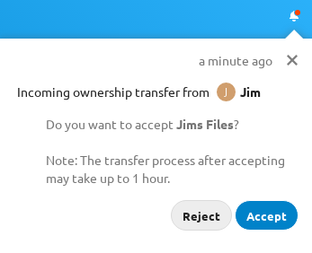

Gli utenti possono trasferire la proprietà dei file e delle cartelle ad altri utenti. Proprietà condivise di quei file/cartelle trasferiti saranno anche trasferiti.
Vai a Impostazioni > Personale > Condivisione > File.
Fai clic su Scegli file o cartella da trasferire >> Si aprirà un selettore di file, che mostra tutti i file e le cartelle nell’account dell’utente.
Scegli un file o una cartella e fai clic su Scegli >> Il nome del file o della cartella scelta viene visualizzato.
Fai clic su Cambia per cambiare le scelta, se necessario.
Scegli un nuovo proprietario digitando il loro nome nel campo di ricerca vicino a Nuovo proprietario.
Fai clic su Trasferisci.
Nota
La compilazione automatica del nome utete o l’elencazione potrebbe essere limitata a causa della visibilità della configurazione amministrativa. Vedi admin documentation per i dettagli.
L’utente destinatario riceve una notifica dove viene richiesta l’accettazione o il rifiuto del trasferimento in entrata.

Se accettati, l’utente destinatario troverà i file e le cartelle trasferite nella radice sotto alla cartella *Trasferito da [utente] il [marca temporale].
L’utente mittente viene informato dell’accettazione o del rifiuto da una notifica.